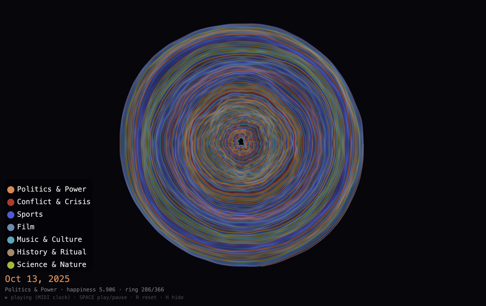
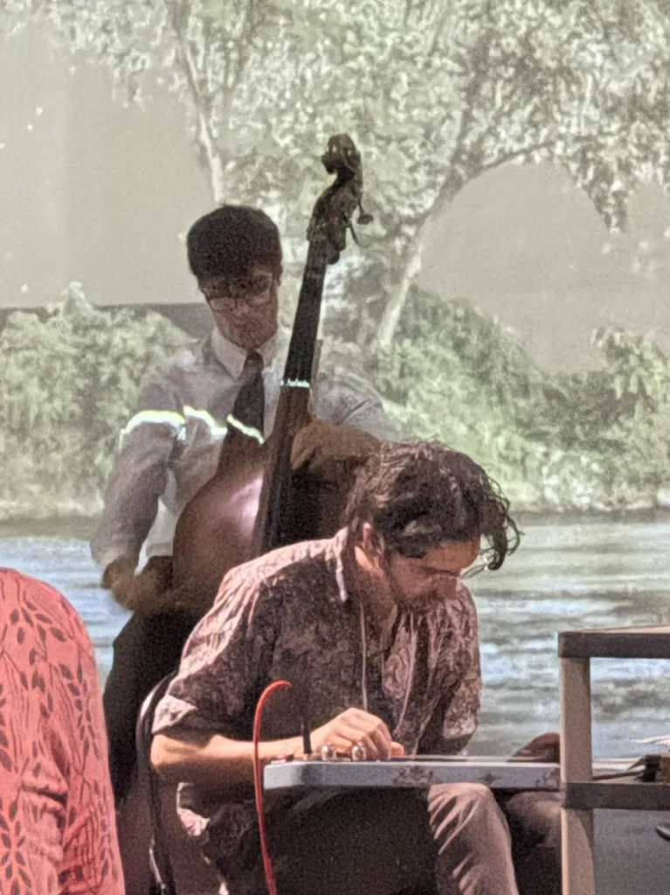
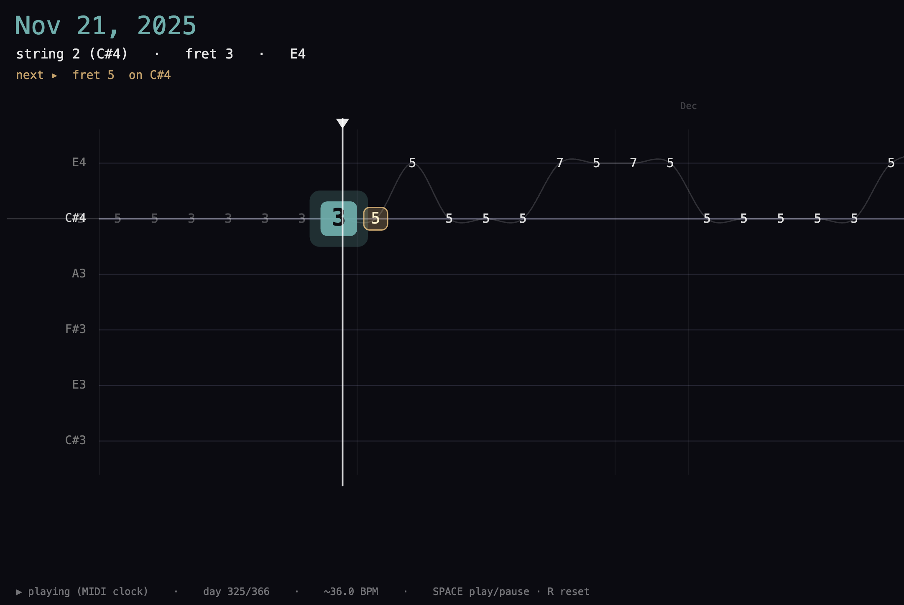

Sounds of Shifting Attention was a live data sonification performance for lap steel guitar and electronics at ICAD 2026.
PERFORMED AT
International Community for Auditory Display (ICAD) 2026, Troy, NY
ROLE
data sonification, composition, live performance
ABOUT
Researcher and multi-instrumentalist Ben Dexter Cooley performed a sonification of the words and themes that captured our collective attention on Wikipedia in 2025. Using computational linguistic methods such as rank-turbulence divergence, researchers at the University of Vermont have built a new tool that organically surfaces words experiencing a surge in attention across all of Wikipedia, describing everything from breaking news stories (the killing of Alex Pretti) to sporting events (US Olympic men's and women's hockey wins) to political upheavals (the emergence of D.O.G.E.). .
The sonification will examine the predominant themes of the top words of each day in 2025 while also capturing the overall sentiment of top trending words (see concept sheet for data details). The piece will use parameter mapping as its primary sonification technique, with trending categories performed programatically by synthesizer and sentiment performed live on a steel guitar. The fusion of quantized and synthesized sound with soaring slide guitar captures both the rigidity and fluidity of how we document and experience a rapidly changing world. Each day a new topic captures the collective attention and plays a note, leaving behind the last; but our emotions and feelings can often slide in a more legato way, morphing from lows to highs and back again.

